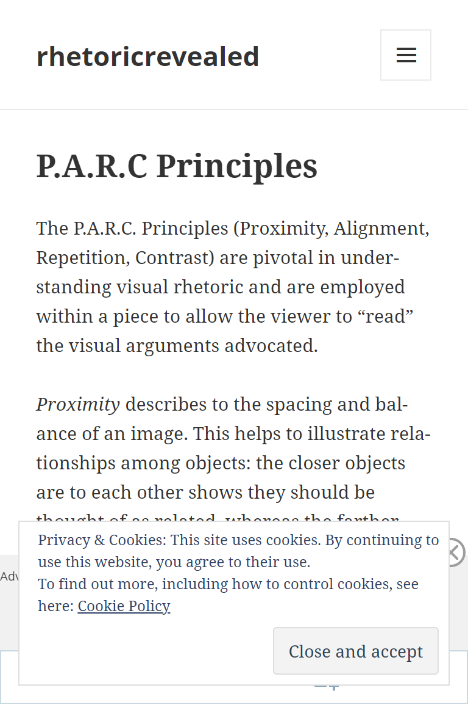
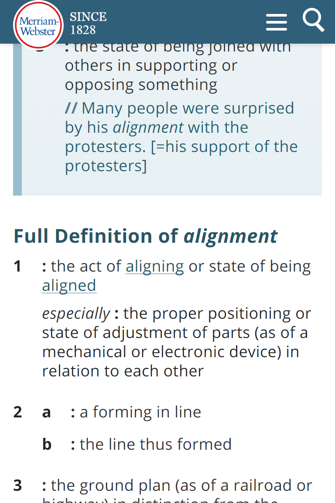
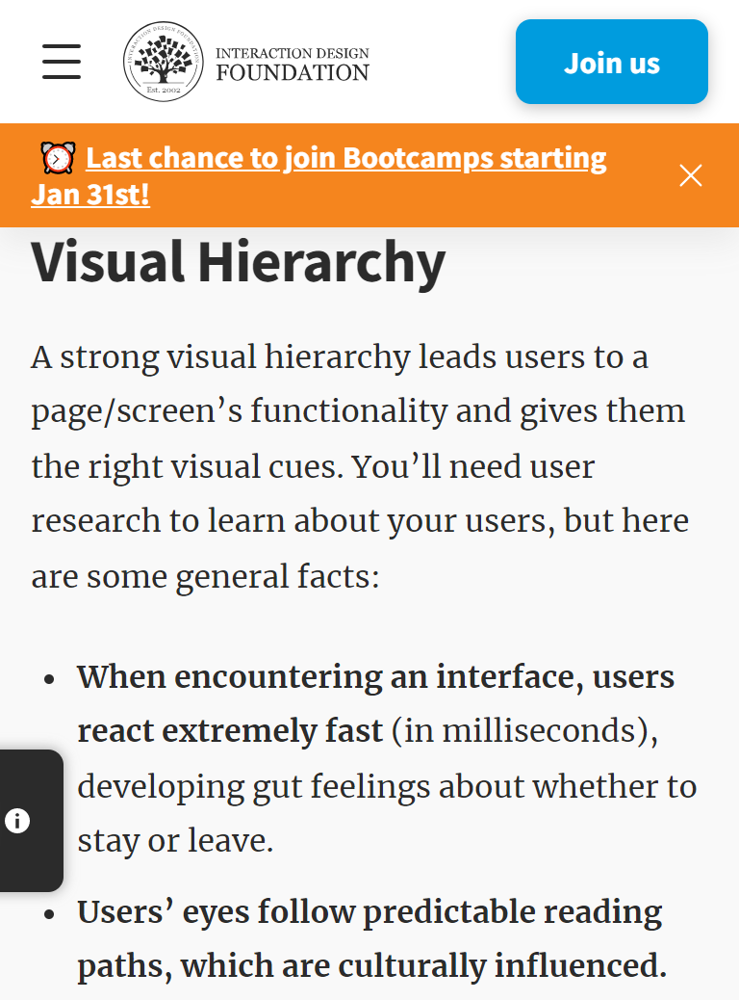

PARC:Repetition
Rhetoricrevealed
https://rhetoricrevealed.wordpress.com/about/ Repetition, which tells us that elements like color, text and graphic patterns should be repeated throughout our design and other designs with similar purposes. And finally, contrast, which tells us that we should create definitive differences between objects on the page that aren't similar to each other. Repetition creates a particular style, creates cohesiveness, creates emphasis, hierarchy structure and strengthens a design. Note: As applicable to the site used
PARC: Alignment
merriam-webster
www.merriam-webster.com Alignment is an important principle of design. It helps create a sharp, ordered appearance for ultimately better designs by ensuring your various elements have a pleasing connection with each other. Center, right, or left-aligned text is the most common, but you can also align text to other objects in your graphic. Note: As applicable to the site used
Visual Hierarchy
merriam-webster
www.interaction-design.org Visual Hierarchy is used to rank design elements and influence in the order you want your users to view them. By using principles like contrast, scale, balance and, more, you can help establish each element in its rightful place and help the most important elements stand out. Note: As applicable to the site used